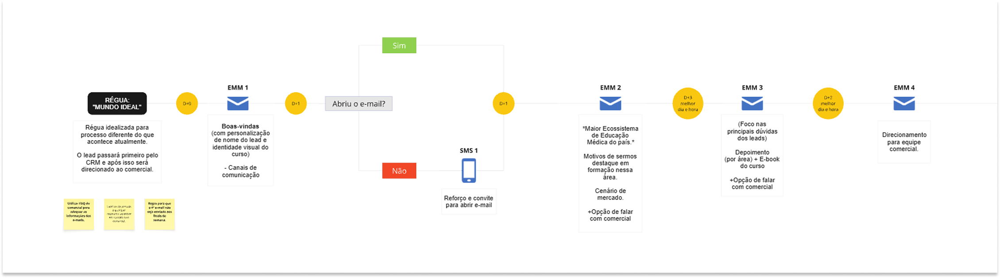
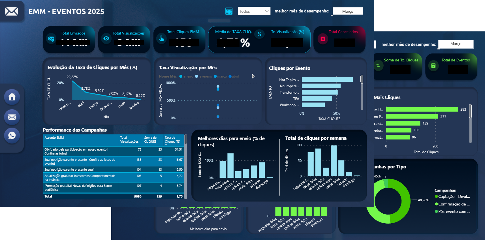

Captação por muitos canais, relacionamento sem régua
A instituição captava leads de pós-graduação e educação continuada por múltiplos canais, mas a comunicação com essas bases não tinha uma régua estruturada. O relacionamento dependia de disparos avulsos, sem uma jornada que nutrisse o lead do primeiro contato até a matrícula — e sem continuidade depois dela.
03 — ProblemaDisparos avulsos, sem nutrição nem mensuração
A operação de CRM apresentava fragilidades que limitavam a conversão:
- Baixa abertura e ausência de nutrição estruturada dos leads.
- Leitura de resultado feita apenas por planilhas, sem mensuração consolidada.
- Peças de e-mail (EMM) com baixo desempenho.
- Falta de alinhamento entre os times de CRM e Comercial.
- Inexistência de nutrição pós-matrícula — o relacionamento parava na conversão.
Da peça à performance: operar o CRM ponta a ponta
Atuei na operação de CRM, da construção das peças à leitura de performance:
- Construção das peças de e-mail em HTML modular.
- Montagem e disparo das jornadas no Salesforce.
- Estruturação das réguas de comunicação em conjunto com o time.
- Leitura de performance e apresentação de resultados via dashboard.
- Ponte entre os times de CRM e Comercial.
O que limitava o trabalho
- Limitações das ferramentas disponíveis.
- Dependência de outras áreas para liberação de conteúdo e definições.
- Prazos curtos de execução.
De disparos isolados a uma régua que reage ao comportamento
O núcleo do trabalho foi estruturar uma régua de comunicação que conduzisse o lead por etapas, em vez de disparos isolados.
- Boas-vindasRégua inicial com personalização de nome
- Ramificação por abertura“Abriu o e-mail?” define o próximo passo
- NutriçãoSequência que aquece o lead progressivamente
- ConversãoEnvio do formulário e matrícula
A régua inicial de boas-vindas atendia todos os leads que ainda não haviam indicado interesse específico, com personalização de nome. A partir dela, a jornada se ramificava por comportamento: o gatilho “abriu o e-mail?” definia o próximo passo — quem abria seguia na sequência de nutrição; quem não abria recebia um SMS de reforço e reconvite.

A sequência de e-mails (EMM) foi desenhada para aquecer o lead progressivamente — boas-vindas, diferenciais da instituição, modalidades de curso e, por fim, estrutura e depoimentos —, com divisão de conteúdo por área a partir do terceiro envio. O acionamento de CRM e Comercial acontecia de forma coordenada, resolvendo o desalinhamento anterior.
A leitura de performance seguia uma hierarquia de métricas: taxa de abertura → taxa de leitura → clique. Os testes A/B foram aplicados primeiro nos assuntos dos e-mails e, em seguida, nos CTAs, sempre com definição de hipótese, variação e análise de resultado.
Além da régua de nutrição, a operação incluía disparos de e-mail e WhatsApp para alertas de eventos e promoções.
07 — Decisões principaisAs escolhas que estruturaram a operação
Régua com ramificação por comportamento
Substituir disparos avulsos por uma jornada que reage à abertura do lead — segue na nutrição ou aciona SMS de reforço.
Desenho da “régua ideal”
Projeto da jornada-alvo, estruturada com o time, como referência de evolução da operação.
Newsletter
Canal recorrente de relacionamento com a base.
Checkout e carrinho abandonado
Fluxo de compra com recuperação de carrinho, conectando CRM e conversão direta.
Leitura por dashboard
Da análise por planilhas para dashboard (Power BI), com hierarquia clara de métricas.
Testes A/B sistemáticos
Teste em assunto e CTA como prática contínua, não pontual.
O que ficou de concreto
Réguas de comunicação
Estruturadas para captação e nutrição.
Peças de e-mail em HTML modular
Reutilizáveis e consistentes, construídas para escala e disparo no Salesforce.
Jornadas automatizadas no Salesforce
Com ramificação por comportamento.
Newsletter
Canal recorrente de relacionamento.
Cursos com checkout
Fluxo de compra com recuperação de carrinho abandonado.
Dashboard de performance (Power BI)
Substituindo a leitura por planilha.

Stack do case
10 — ImpactoDe disparo avulso a operação mensurável
O impacto foi qualitativo e operacional — sem métricas fabricadas, mas com mudanças que a operação sentiu no dia a dia:
Antes
- Disparos avulsos para toda a base.
- Sem nutrição estruturada do lead.
- Leitura de resultado por planilhas manuais.
- CRM e Comercial desalinhados.
Depois
- Régua estruturada e mensurável.
- Ramificação por comportamento — engajados e não engajados tratados de formas diferentes.
- Dashboard de performance contínuo (abertura, leitura, clique).
- CRM e Comercial coordenados pela própria jornada.
O que ficou
- Régua que reage a comportamento converte melhor do que volume de disparo.
- Mensuração consolidada (dashboard) muda a conversa com as outras áreas: decisão deixa de ser opinião e passa a ser leitura de dado.
- A maior parte do ganho veio de estruturar o que já existia de forma dispersa, não de adicionar complexidade.
Evolução possível
Visão projetada, não implementada — saí do setor antes desta etapa.
- Nutrição pós-matrícula: a lacuna mais clara da operação. A régua terminava na conversão; o passo natural seria estruturar o relacionamento com o aluno já matriculado — onboarding, recorrência e recompra de novos cursos.
Os artefatos visuais deste case — mapa da régua de comunicação, a ramificação por comportamento e o dashboard de performance — estão sendo recriados em versões anonimizadas, já que o material original continha dados internos. Em breve aqui.